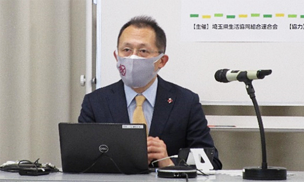
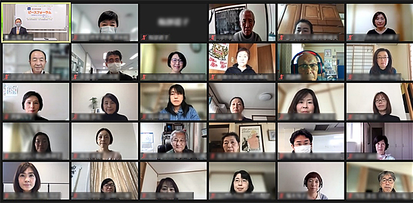

埼玉県生協連ピースフォーラム報告
「核兵器をなくすために必要なこと」を学び、考えました
3月3日(木)10時30分より、埼玉県生協連ピースフォーラム～核兵器をなくすために必要なこと～を、川崎哲さん(ICAN核兵器廃絶国際キャンペーン会長兼国際運営委員)を講師に迎えて、埼玉会館3C会議室とZoomによるオンラインで開催し、78人が参加しました。
はじめに、吉川会長理事が主催者あいさつの中で、同日付でロシアの武力侵攻に抗議する会長声明をロシア大使館に送付したこと、人道支援としてウクライナに対する日本ユニセフ協会が行う緊急募金に組織募金することを表明しました。
つぎに、川崎さんの講演では、ロシアのウクライナへの武力侵攻について、世界が歩んできた核軍縮の歴史について、核兵器禁止条約について、そして私たちができること、しなければいけないことについて、お話しいただきました。
また、後半では、埼玉県原爆被害者協議会(しらさぎ会)の「これまでの活動とこれから考えていきたいこと」について、会長の原明憲さんから報告いただきました。

参加者の声
- 現在、ロシアとウクライナの情勢が世界の危機的状況であることが、人ごとのように報道を見ていた私にとって衝撃的でした。1人1人が声をあげる責任があるということ、核兵器では世界は平和には絶対にならないことを改めて考えさせられました。
- 核兵器を持つことで他国の攻撃を抑制するという考えではなく、規範の力で制御する、という考えに納得できました。「一握りの政治家に命を預けられるのですか」というお話では、声をあげることの大事さを感じました。
- ロシアのウクライナ侵攻には、ICANノーベル平和賞受賞講演の言葉「核兵器の終わりか、私たちの終わりか。…核兵器は私たちを安全にするどころか、紛争を生み出しています。」が現実であることを実感させられました。川崎さんがおっしゃるように、規範の強化で人類が誤った方向に進まないように、そして私たちひとりひとりが声を上げなければいけないと思いました。
- 核兵器をなくすために、まず、現状を知ること、関心を持つこと、そして動き出したいと思いました。
- しらさぎ会の皆さんと一緒に、若年層を対象に核兵器のない世界を考える交流会を開催してみたいです。
